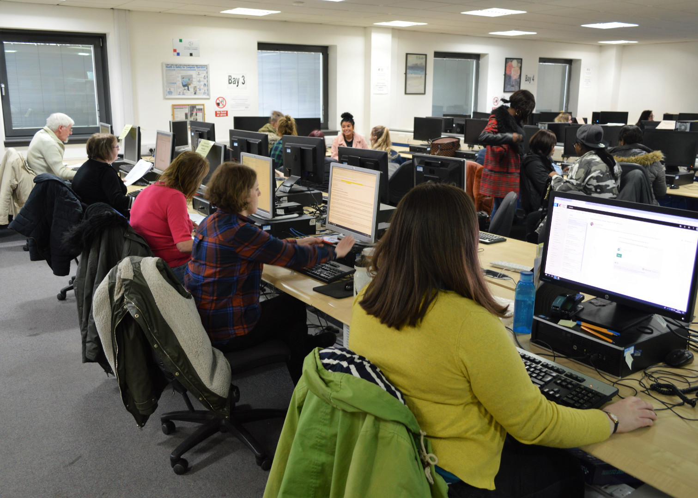

College Certification
Learners can take a range of courses at different levels and receive college certification and recognition for learning.
Introductory courses are for those with little or no experience of using a computer or digital device. The introductory courses cover a range of skills such as using office applications, file management up to developing mobile apps and web pages.
Intermediate courses build upon skills developed through the introductory courses and will generally lead to preparing learners for ECDL assessments or further study in other programmes.
Units
- Introduction and Intermediate Word Processing
- Introduction and Intermediate Spreadsheets
- Introduction and Intermediate Presentation Software
- Introduction and Intermediate Database
- Introduction and Intermediate Email
- Introduction and Intermediate Internet
- Introduction to File Management
- Introduction and Intermediate Mobile App Development
- Introduction to Office 365 Web Apps
- Introduction to Coding
- Introduction to Cyber Security
- Introduction to Web Development
- Introduction to the Internet of Things
- Introduction to Digital Marketing
